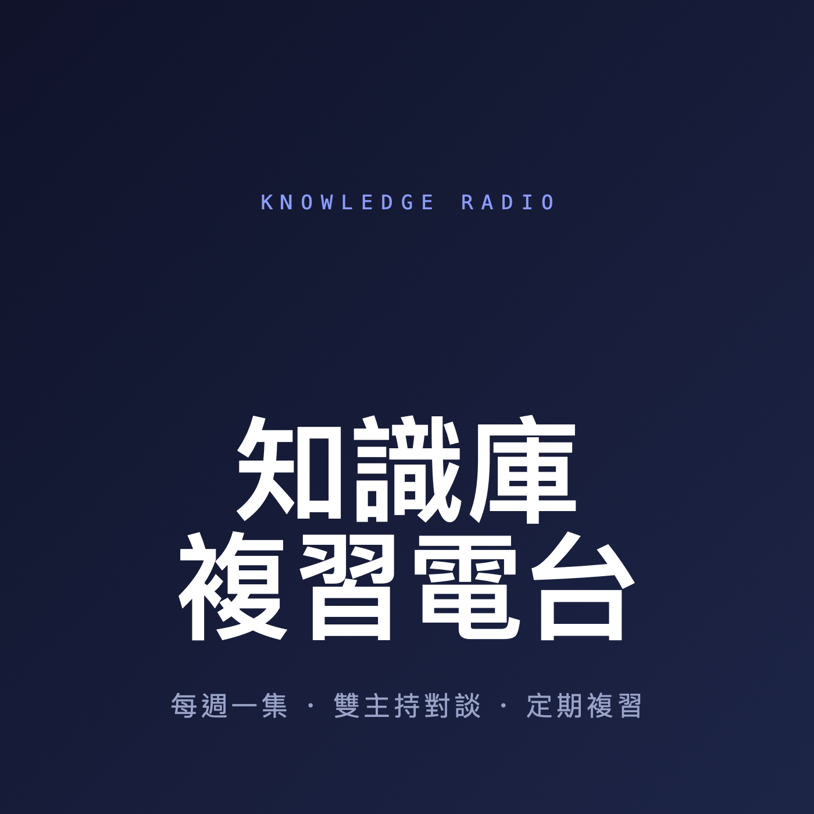

2026-07-11投資
投資大師吵架後的指數共識
五位投資大師（Grantham / Pabrai / Cathie Wood / O'Leary / Ben Felix）在「主動⟷被動」光譜上吵得兇，散戶端卻收斂到同一句：買 index、守消費紀律、別過度交易。這集用聊天對談帶你重新吸收五組關鍵對撞：擇時之爭、AI 的兩極判斷、債券配置、Bitcoin 的三種答案、估值的深層矛盾。

把 Obsidian 主題知識庫的累積，每週做成一集雙主持對談，訓練時聽、定期複習。
Apple Podcasts：資料庫 → 左上「⋯」→「加入節目（透過網址）」貼上；Overcast / Pocket Casts：新增 → 貼上網址。此網址不公開索引、只有你有。
五位投資大師（Grantham / Pabrai / Cathie Wood / O'Leary / Ben Felix）在「主動⟷被動」光譜上吵得兇，散戶端卻收斂到同一句：買 index、守消費紀律、別過度交易。這集用聊天對談帶你重新吸收五組關鍵對撞：擇時之爭、AI 的兩極判斷、債券配置、Bitcoin 的三種答案、估值的深層矛盾。